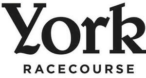

Trade Mark Journal No.2026/008 20 February 2026
UK00004336186 5 February 2026 (9,14,18,21,25,41,43)

- Class 9
- Apparatus for recording, transmission or reproduction of sound or images; magnetic data carriers; computer software; batteries; battery chargers; phone chargers; mobile phone chargers; portable chargers for electronic devices; charging cables; battery packs; power banks; USB chargers.
- Class 14
- Jewellery; costume jewellery; precious stones; horological and chronometric instruments; watches; clocks; key rings; key chains; key fobs; badges of precious metal; tie pins; cufflinks.
- Class 18
- Trunks and travelling bags; umbrellas; parasols; walking sticks; whips, harness and saddlery; bags; handbags; shopping bags; carrier bags; hessian bags; jute bags; tote bags; holdalls; luggage; rucksacks; backpacks; wallets; purses; card holders. .
- Class 21
- Household or kitchen utensils and containers; combs and sponges; brushes (except paint brushes); glassware, porcelain and earthenware not included in other classes; drinking vessels; mugs; cups; travel mugs; insulated mugs; glass tumblers; drinking glasses; teapots; coffee pots; water bottles; flasks; vacuum flasks; bottles; decanters; jugs; pitchers. .
- Class 25
- Clothing; footwear; headgear; hats; caps; bobble hats; woolly hats; beanies; headbands; earmuffs; scarves; gloves; mittens; coats; jackets; gilets; blazers; shirts; polo shirts; t-shirts; sweatshirts; hoodies; jumpers; trousers; shorts; dresses; skirts; changing robes; ties; bow ties; belts; socks.
- Class 41
- Education; providing of training; entertainment; sporting activities; cultural activities; organisation and hosting of race meetings; horse racing; racecourse services; organisation of sporting events and competitions; organisation of entertainment events; provision of entertainment facilities; provision of sporting facilities; gambling services; betting services; gaming services; provision of gaming facilities; provision of information relating to horse racing, entertainment and sporting events; hospitality services, namely providing entertainment and sporting event services and tickets therefor.
- Class 43
- Services for providing food and drink; temporary accommodation; restaurant services; bar services; café services; catering services; provision of food and drink; self-service restaurant services; snack bar services; hospitality services, namely providing food and drink; hotel services; hotel accommodation services; temporary accommodation services; reservation of temporary accommodation; banqueting services; event catering; corporate hospitality services (provision of food and drink).
York Racecourse Knavesmire LLP
Representative: Lewis Silkin LLP